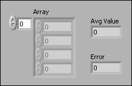
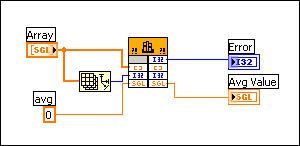

This section describes the tasks necessary to complete the Array Average VI you started building in Building a Shared Library to Call from LabVIEW so the VI can call the avg_num function in myshared.dll.
Note��
(Linux) The shared library file has a .so extension. You cannot call functions in static libraries (.a files) on Linux. You can only call shared libraries (.so files) dynamically.
You must complete the following tasks before the Array Average VI can call the avg_num function in myshared.dll.
Complete Configuration of the Call Library Function Node
Note��If you want to run applications or shared libraries created with different versions of LabVIEW on the same computer, the computer must have a version of the LabVIEW Run-Time Engine that is compatible with each version of LabVIEW used to create the applications or shared libraries.
Complete the following steps to complete the configuration of the Call Library Function Node.
Open the Array Average VI block diagram.
Right-click the Call Library Function Node and select Configure from the shortcut menu to open the Call Library Function dialog box.
Click the Browse button to the right of the Library Name or Path control to display a file dialog box.
Navigate to the location of your myshared.dll file.
Select myshared.dll and click the Open button. The file path to myshared.dll appears in the Library Name or Path control. The Library Name or Path control specifies the library name or path for the function you are calling. Enter only the library name if the library is in the search path of the system. Enter the entire path if the library is not in the search path of the system.
Note��To make the reference platform independent, use the * wildcard. Keep the C++ compiler from introducing platform dependence in exported function names through a process called name mangling by using the C++ compiler function export directive, extern "C"{}, in your header file.
Build the Front Panel Window
Complete the following steps to create the front panel of the Array Average VI.
Place an array control on the front panel window and label it Array.
Place a numeric control in the array shell and resize the array to contain four elements.
Right-click the Array control and select Representation�Single Precision
from the shortcut menu.
Place a numeric indicator on the front panel window and label it Avg Value to display the result of your averaging calculation.
Right-click the Avg Value indicator and select Representation�Single Precision from the shortcut menu.
Place a numeric indicator on the front panel and label it Error to display any errors that your VI generates.
Right-click the Error indicator and select Representation�Long from the shortcut menu.
The following front panel belongs to the Array Average VI.

Complete the Block Diagram
Complete the following steps to complete the block diagram of the Array Average VI.
Wire Array to the a input of the Call Library Function Node.
Place an Array Size function on the block diagram.
Wire Array to the input of the Array Size function.
Wire the Array Size function output to the size input of the Call Library Function Node.
Right-click the avg input of the Call Library Function Node and select Create�Constant from the shortcut menu. Set the constant value to zero.
Wire the avg output of the Call Library Function Node to Avg Value.
Wire the error output of the Call Library Function Node to Error.
The following block diagram shows the completed Array Average block diagram.

Run the VI
On the front panel, enter values in Array and run the VI to calculate the average of those values. Save your work and close the VI.
If your shared library returns incorrect results or crashes, verify the data types and wiring to see if you wired the wrong type of information.